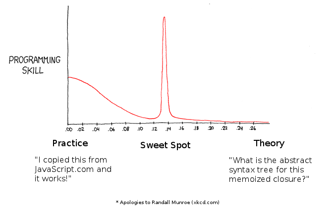

Professional JavaScript
Chris Oakman
March 2012
Chris Oakman
March 2012
The target audience for this talk are people who write JavaScript professionally.
My goal is to find the sweet spot between practice and theory.
Part I
The simple types in JavaScript are:
// numbers
var num1 = 96;
var num2 = 2.5;
var num3 = 1e3; // 1000
if (1 === 1.0) { // true
console.log('every number is a 64-bit floating point');
}
if (1000 === num3) { // true
console.log('one thousand');
}
// NOTE: beware of floating point operations in JavaScript
if (0.1 + 0.2 === 0.3) { // false
console.log('Pigs are flying.');
}
// convert to integers if needed
if (0.1 * 1000 + 0.2 * 1000 === 0.3 * 1000) { // true
console.log('Integers are generally safe.');
}
// strings
var str1 = 'Hello'; // single quotes
var str2 = "world!"; // double quotes
console.log(str1 + ' ' + str2); // "Hello world!"
// strings have a length property
console.log( str1.length ); // 5
// strings have built-in methods
console.log( str1.toUpperCase() ); // "HELLO"
console.log( str1.indexOf("e") ); // 1
console.log( str1.indexOf("z") ); // -1 (z not found)
console.log( str1.substr(3, 2) ); // "lo"
// NOTE: JavaScript does not have chars, only strings
// boolean var yup = true; var nope = false; // null // NOTE: usually you never assign this var never = null; // undefined is lack of assignment var huh; console.log(huh); // undefined
(yes, everything)
| Simple Types | Objects | ||
|---|---|---|---|
| Numbers | 9
| Objects | {}
|
| Strings | "hello"
| Arrays | []
|
| Boolean | true
| Functions | function() {}
|
| null | null
| Regular Expressions | /foo/i
|
| undefined | undefined
| ||
Numbers, Strings, and Booleans are object-like.
// this is an empty object; it has no properties
var empty_obj = {};
// object with three properties: name, height-in-m, type
var monster = {
name : "King Kong",
"height-in-m" : 42,
type : "gorilla"
};
// "King Kong is a gorilla"
console.log(monster.name + " is a " + monster.type);
// change the value of monster.type
monster.type = 'giant gorilla';
// "King Kong is a 42m tall giant gorilla"
console.log(monster.name + " is a " + monster["height-in-m"]
+ "m tall " + monster.type);
// NOTE: dot notation is preferred over bracket notation where possible
// a property's value can be obtained from any expression,
// including other objects
var me = {
name : {
first : "Chris",
last : "Oakman"
},
location : {
name : "Houston, TX",
lat : 29.75961,
lng : -95.36270
}
};
console.log(me.name.first + " " + me.name.last); // "Chris Oakman"
// NOTE: nested objects are a powerful way to represent data
// more on this when we get into the DOM
// this is an empty array
var arr1 = [];
// array with several values
// NOTE: trailing commas are not allowed
var arr2 = ["alpha", "bravo", "charlie"];
// arrays are zero-indexed
console.log( arr2[1] ); // "bravo"
// arrays can contain values of multiple types
var arr3 = [0, 1, "two", "three", 4, { num : 5 }];
console.log( arr3[5].num ); // 5
// arrays come with the .length property
console.log( arr3.length ); // 6
// .push method
arr3.push("six"); // adds the string "six" to the end of arr3
// .join method
console.log( arr2.join("-") ); // "alpha-bravo-charlie"
// arrays can be the value of an object property
var obj1 = {
cities : ["Houston", "Dallas", "Austin"]
};
// JavaScript has regular expressions var str1 = "Foo Bar"; var regexp = /foo/i; // NOTE: "replace" is a method of every String var str2 = str1.replace(regexp, "Bar"); console.log( str2 ); // "Bar Bar" // Regular Expressions are a powerful tool // learn them, use them, don't over-use them
eval()
<?xml version="1.0" encoding="UTF-8"?> <pets> <pet name="Mack" type="cat" /> <pet name="Simon" type="cat" /> <pet name="Sophie" type="dog" /> </pets>
{
"pets" : [
{
"name" : "Mack",
"type" : "cat"
},
{
"name" : "Simon",
"type" : "cat"
},
{
"name" : "Sophie",
"type" : "dog"
}
]
}
// a simple function
function add1(a, b) {
return a + b;
};
// another way of writing the same function (NOTE: this is preferred)
var add2 = function(a, b) {
return a + b;
};
// execute a function with ()
var result = add2(3, 2);
console.log( result ); // 5
// functions can be the value of an object property
var obj1 = {
add : add2,
subtract : function(a, b) {
return a - b;
}
};
console.log( obj1.add(3, 2) ); // 5
console.log( obj1.subtract(3, 2) ); // 1
var a = "apple";
var func1 = function() {
// inner methods have access to outside variables
// this function has access to variable "a"
a = "apricot"; // change the value of "a"
console.log(a);
};
console.log(a); // "apple"
func1(); // "apricot"
console.log(a); // "apricot" (the value of "a" was changed inside func1)
var b = "banana";
var func2 = function() {
// define variable "b" inside this function
// completely separate from the "b" defined outside the function
var b = "blueberry";
console.log(b);
};
console.log(b); // "banana"
func2(); // "blueberry"
console.log(b); // "banana" (the value of "b" in this scope does not change)
var counter = (function() {
// variable count is defined inside our function
var count = 0;
// we return an object with three properties
// each property is a function that has access to the "count" variable
return {
up : function() { count++; },
down : function() { count--; },
value : function() { return count; }
};
})(); // execute the function immediately, which returns an object
console.log( counter.value() ); // 0
for (var i = 0; i < 6; i++) { // increment 6 times
counter.up();
}
console.log( counter.value() ); // 6
counter.down();
console.log( counter.value() ); // 5
// the "count" variable exists in memory, but we do not have direct access to it
// this is called closure
<!-- HTML -->
<div id=pets>
<h1>Pets</h1>
<ul>
<li>cat
<li>dog
<li>fish
</ul>
</div>
// example DOM
var div = {
id : "pets",
innerHTML : "<h1>Pets</h1><ul><li>cat...",
tag : "div",
children : [
{
innerHTML : "Pets",
tag : "h1"
},
{
children : [ ... ],
innerHTML : "<li>cat</li><li>dog...",
tag : "ul"
}
]
};
<div id=pets style="color:red">
<h1>Pets</h1>
<ul>
<li>cat
<li>dog
<li>fish
</ul>
</div>
// get the element
var el = document.getElementById("pets");
// change the text color from red to blue
el.style.color = "blue";
// use a library instead
$('div#pets').css('color', 'blue');
<div id=pets onclick="alert('You clicked me!')">
<h1>Pets</h1>
<ul>
<li>cat
<li>dog
<li>fish
</ul>
</div>
// get the element
var el = document.getElementById("pets");
// attach a function for the "onclick "event
el.onclick = function() {
alert("You clicked me!");
// the object context of this function
// execution is the DOM element
console.log(this);
};
// use a library instead
$('div#pets').on('click', function() { ... });
<div id=pets>
<h1>Pets</h1>
<ul>
<li>cat
<li>dog
<li>fish
</ul>
</div>
// get the element
var el = document.getElementById("pets");
// attach a function for the "onclick "event
el.onclick = function() {
alert("You clicked me!");
// the object context of this function
// execution is the DOM element
console.log(this);
};
// use a library instead
$('div#pets').on('click', function() { ... });
Part II
Never do these things. There is always a better way.
eval()
setTimeout("string", 1000)
with
Rarely do these things. There is almost always a better way.
document.write() or document.writeln()
Always do this stuff; there are occasional exceptions.
=== and !==
Always do these things. There is never a reason not to do them.
<!doctype html>
parseInt(val, 10)
<script src="">
* selectors
For most web sites / applications:
For most web sites / applications:
Strongly recommended from personal experience.
var foo = function() { ... };
Part III
The importance of tools and development environment cannot be overstated.
I could give a whole talk on this stuff, but just wanted to distill these nuggets.
This stuff separates the amateurs from the professionals. If you're not using this stuff at your work / project, you're doing it wrong.
Have a "baseline" list, then have a "recommended" list
Chris Oakman
chris@oakmac.com
https://github.com/oakmac/Professional-JavaScript